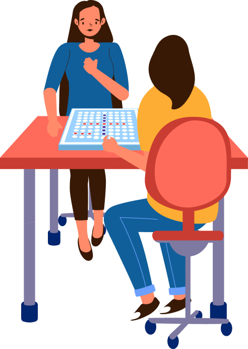

About Reversi
Designed by Wenwen Jiang
Reversi offers a host of exciting features, including great graphics and configuraable player names and score tracking, outstanding AI engine and automatic save when you exit the application.
Reversi is a strategy board game for two players. The goal is to have mahority of disks reversed to display your own color at the end of the game. Place your pieces carefully and defeat your opponent in this back and forth battle.
With the right stratery, tactics and observation skills you will eventually find yourself amongst the top players. Can you make it?
Play this fancy Reversi game now for free!